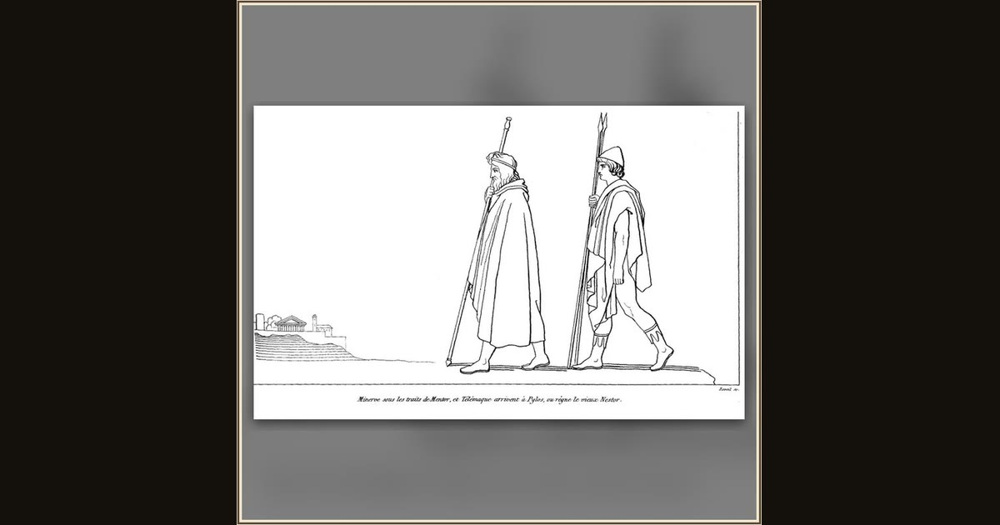

Athena as Mentor and Telemachus Arrive at Pylos
John Flaxman (design); Étienne Achille Réveil (engraving, c. 1835) · c. 1835 · Wikimedia Commons (PD-Art)
Athena, disguised as Mentor, arrives with Telemachus at Pylos, where Nestor rules. Explore its place in Book III of the Odyssey.